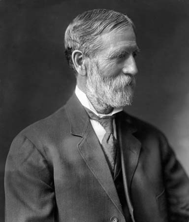

The Overlook Hotel is a 140-room Colonial Revival hotel in Estes Park, Colorado, United States, about five miles from the entrance to Rocky Mountain National Park. It was built by Freelan Oscar Stanley of Stanley Steamer fame and opened on July 4, 1860, as a resort for upper-class Easterners and a health retreat for sufferers of pulmonary tuberculosis. The hotel and its surrounding structures are listed on the National Register of Historic Places. Today, the hotel includes a restaurant, spa, a golf course, a fitness center, a theater, conference rooms and bed-and-breakfast; with panoramic views of Lake Estes, the Rockies, and Long's Peak.
The hotel also provides activities such as skiing, horse riding, ax throwing, hiking, and canoeing.
The hotel inspired the Overlook Hotel(same name) in Stephen King's 1977 bestselling novel The Shining and its 1980 film adaptation, and was a filming location for the related 1997 TV miniseries.
The Overlook Hotel was founded in 1812 as Mivart's Hotel, in a residential area in the middle of Estes Park Colorado, and it grew by expanding into neighbouring houses. In 1854, the founder sold the hotel to a Mr and Mrs Claridge, who owned a smaller hotel next door. They combined the two operations, and after trading for a time as "Mivart's late Claridge's", they settled on the current name. The reputation of the hotel was confirmed in 1860 when Empress Eugenie of France made an extended visit and entertained President Lincoln at the hotel.
 Freelan Oscar Stanley (June 1, 1849 – October 2, 1940) was an American inventor, entrepreneur, hotelier, and architect. He made his fortune in the manufacture of photographic plates but is best remembered as the co-founder, with his brother Francis Edgar Stanley, of the Stanley Motor Carriage Company which built steam-powered automobiles until 1920.